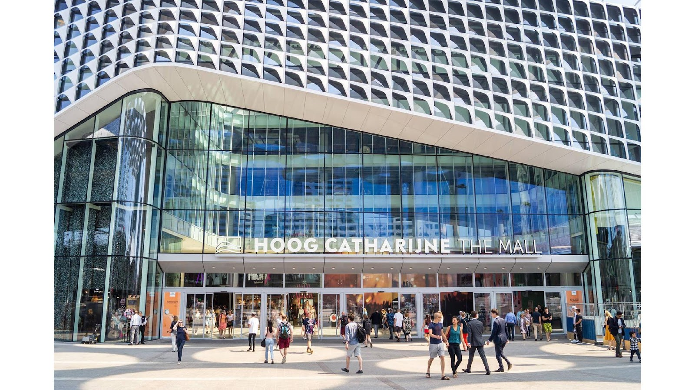
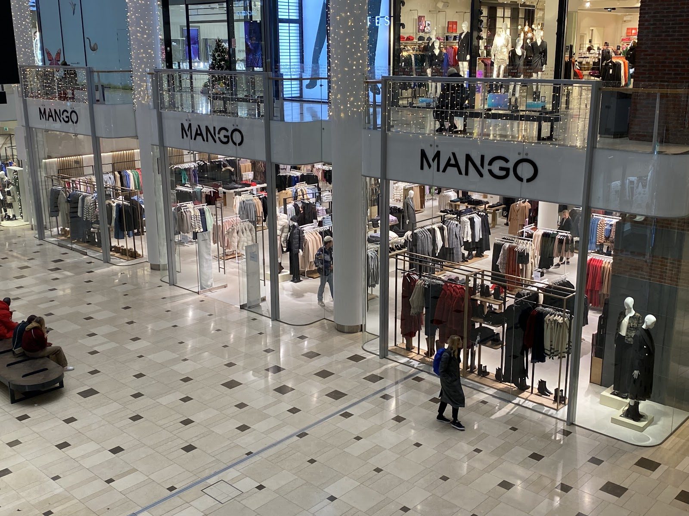
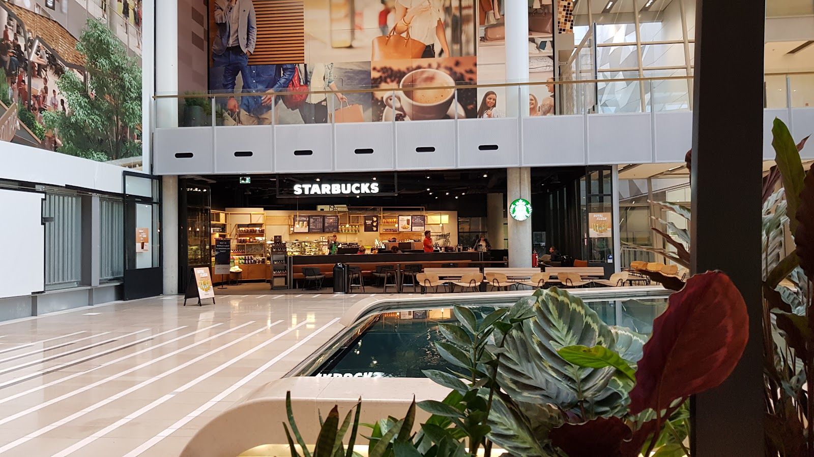
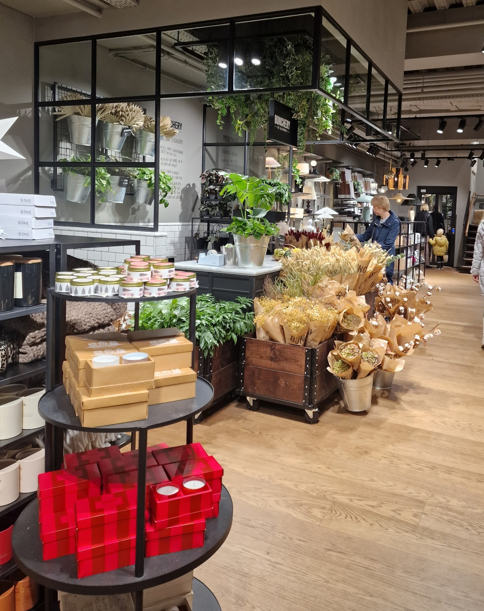
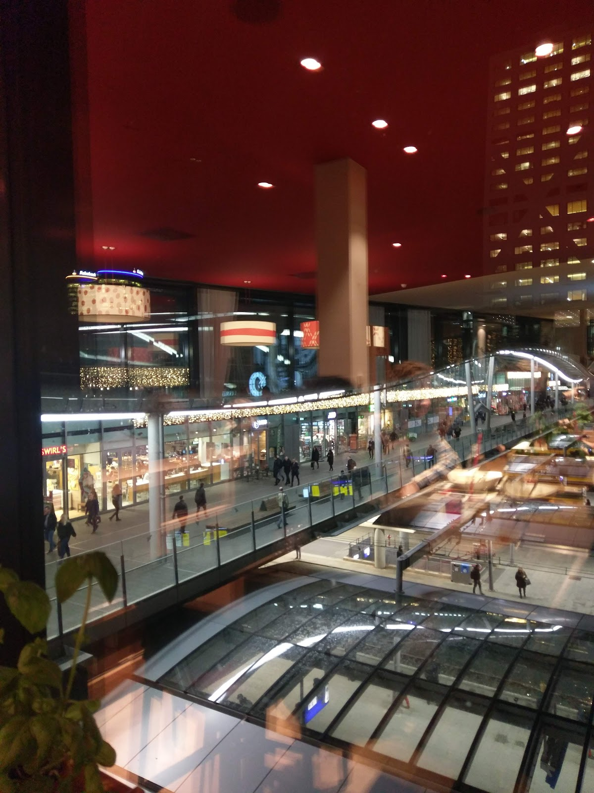
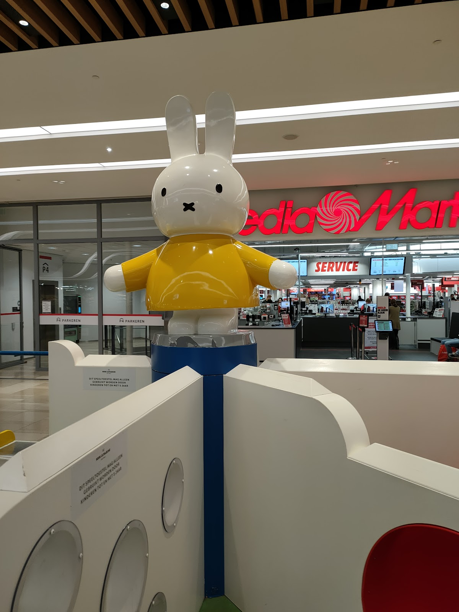
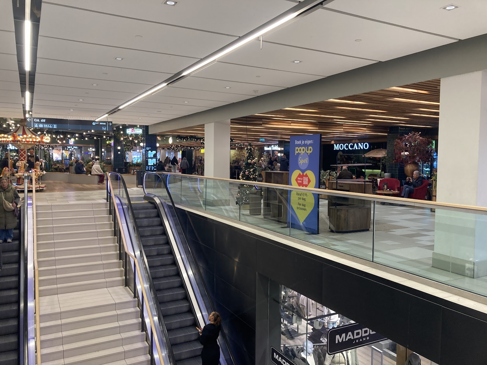

Winkelcentrum in Utrecht, tussen Centraal en de binnenstad
Uitstappen, en je bent er al.
Meer dan 120 winkels en ruim 30 restaurants, tussen het station en de stad. Zeven dagen per week open, van maandag tot en met zaterdag tot 20:00.
4,3 uit 31.783 Google-reviews

Open als jij tijd hebt.
Hoog Catharijne heeft de ruimste openingstijden van alle winkelcentra in Nederland. Na je werk nog even langs? Tot 20:00 kan dat, zes dagen per week.
Eten en supermarkten hebben eigen tijden, die vind je bij het schema. De tijden per winkel kunnen afwijken.
Winkels
- Maandag
- 12:00 tot 20:00
- Dinsdag
- 10:00 tot 20:00
- Woensdag
- 10:00 tot 20:00
- Donderdag
- 10:00 tot 20:00
- Vrijdag
- 10:00 tot 20:00
- Zaterdag
- 10:00 tot 20:00
- Zondag
- 12:00 tot 18:00
Eten & drinken
Ontbijt en lunch 8:00 tot 20:00
Middag en avond 10:00 tot 22:00
Supermarkten
Dagelijks 8:00 tot 21:00
133 winkels, 37 plekken om te eten. Eén dak.
Shoppen, ontspannen, lekker eten en tijd doorbrengen met familie en vrienden. Dat kan hier allemaal, zonder dat je een paraplu nodig hebt.

Mode & meer
Van JD Sports, Foot Locker en Zara Man tot Bershka, Boots, Jamin en de Samsung Experience Store.

Eten aan het water
Koffie bij de vijver, of een hapje bij The Seafood Bar, Simit Sarayi, Surya To Go, The Gyros Bar, Salsa Shop, Popsyz of The Smooth Brothers.

Even rondkijken
Bloemen, kaarsen en iets moois voor thuis. Of zoek een cadeau en geef de Hoog Catharijne cadeaukaart.
Het drukste winkelcentrum van Nederland.
Hoog Catharijne ligt precies tussen het Centraal Station en de oude binnenstad. De renovatie heeft het centrum moderner en prettiger gemaakt, en sinds de Singel in september 2020 terug is, kun je er met je bootje zelfs onderdoor varen.
Na het winkelen ben je zo bij een concert in TivoliVredenburg of de nieuwste film bij Kinepolis. In 2019 won Hoog Catharijne de Jaarprijs van de Nederlandse Raad van Winkelcentra.
- Geopend in
- 1973
- Parkeergarages
- 5
- Familieplekken
- 3500


Ook met de kleintjes geregeld.
Nijntje staat je op te wachten bij de speelplek. En voor de rest van de dag zijn er genoeg voorzieningen, zodat jij rustig kunt rondlopen.
- Kinderwagen verhuur
- Babyverzorgingsruimte
- Informatiebalie
- Openbaar toilet
- Wifi
- Stiltecentrum
- Mindervalidentoegang
- AED
- Pakketpunt
- Vergaderruimtes
Zo kom je hier.
Godebaldkwartier 54, 3511 DX Utrecht. Makkelijk te bereiken met het openbaar vervoer en met de auto.
Plan je routeMet de trein
Hoog Catharijne ligt tussen Utrecht Centraal en de binnenstad. Vanaf het perron loop je zo het winkelcentrum in.
Met de auto
Parkeer in een van de 5 parkeergarages, met 3500 familieparkeerplaatsen, mindervalidenplekken en laadpunten voor elektrische auto's.
Met de fiets
Zet je fiets in de fietsenstalling en loop zo naar binnen.
Te voet
Vanuit de oude binnenstad wandel je zo naar binnen. En andersom loop je na het shoppen zo de stad in.

Wat bezoekers zeggen.
4,3 gemiddeld uit 31.783 reviews op Google
"Een van de mooiste en meest fantastische winkelcentra die ik ooit heb bezocht."
"Hoog Catharijne winkelcentrum is echt een prachtig winkelcentrum. Je kunt hier eigenlijk alles vinden wat je zoekt: er is een grote variatie aan winkels, voor ieder wat wils."
"We mochten in Hoog Catharijne onze gele badeend over een fontein opbouwen. Het was even wat sjouwen maar wat stond het prachtig in het winkelcentrum ☺️"
Hoe was je bezoek?
Een idee, een compliment of iets dat beter kan: wat het ook is, dit is je kans om het te zeggen.
- Bellen
- 030 234 6464
- Mailen
- voorbeeld@hotmail.com
- Adres
- Godebaldkwartier 54
3511 DX Utrecht